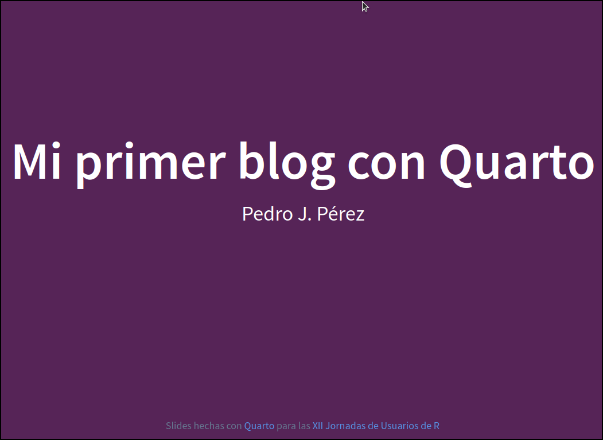
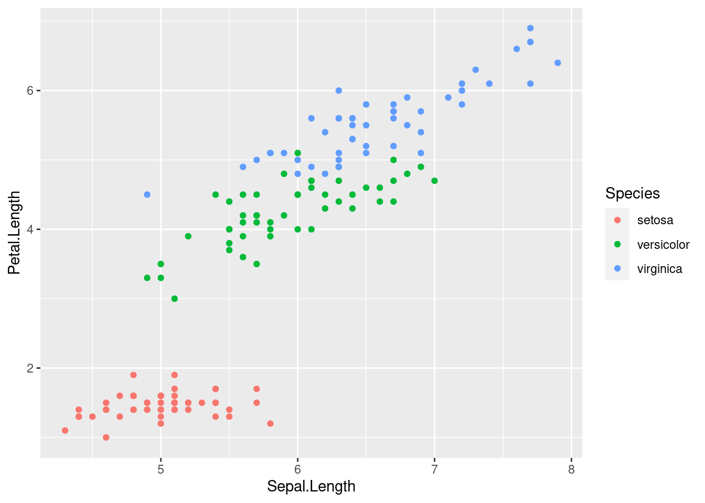

::: {#fig-elephants layout-ncol=2}
{#fig-2.1}
{#fig-2.2}
2 imágenes alineadas
:::Mi Segundo post con Quarto
Taller
soluciones practica nº 5
Soluciones a la Práctica del tutorial nº 5.
Este ya es mi segundo post con Quarto. En él voy a hacer lo siguiente:
1 Insertar 2 imágenes side-by-side

2 Inserta un tweet
{{< tweet user=Culturas2_tve id=1589703143562309632 >}}3 Inserta un tab-set
::: panel-tabset
#### Para hacer esto ...
::: {#fig-elephants layout-ncol=2}
{#fig-2.1}
{#fig-2.2}
Dos imágenes alineadas
:::
#### Has de escribir
``` markdown
::: {#fig-elephants layout-ncol=2}
{#fig-2.1}
{#fig-2.2}
2 imágenes alineadas
:::::: {#fig-elephants layout-ncol=2}
{#fig-2.1}
{#fig-2.2}
2 imágenes alineadas
:::4 Inserta un call-out
::: {.callout-important icon="false"}
#### Tarea xx
- Tendremos que hacer esto
- y esto otro
:::5 Inserta un gráfico en el margen
```{r}
#| column: margin
library(leaflet)
leaflet() %>%
addTiles() %>% # Add default OpenStreetMap map tiles
addMarkers(lng = -4.7880, lat = 37.885, popup = "Rectorado de la Universidad de Córdoba\n (Sede de las XII Jornadas de usuarios de R)")
``````{r}
#| column: margin
library(ggplot2)
ggplot(iris) + geom_point(aes(x = Sepal.Length, y = Petal.Length, color = Species))
```
Prueba superada!!
Acabé con mi segundo post. FIN